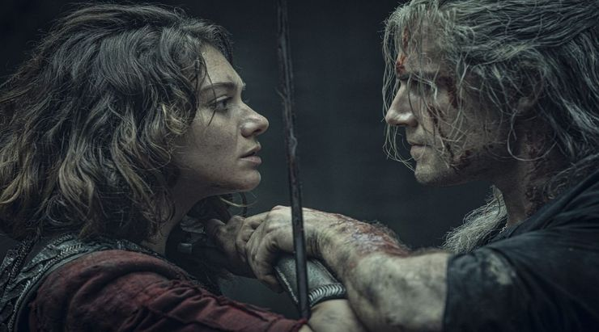

In this blog post I am going to summarize the plot of the first season of the Netflix series the Witcher.
Episode 1 - The End’s Beginning
The Witcher starts off the first season with a scene featuring Geralt doing what he does best - slaying monsters. The first glimpse of Henry Cavill’s Geralt is shown off immediately in his battle with the kikimora in the swamps.
Later on when Geralt enters the town of Blaviken, he crosses paths with Renfri, the ill-fated princess on-the-run. After a brief conversation, Geralt is lured away and eventually meets the mage, Stregobor, who seeks to hire Geralt for his help in killing Renfri. Though the mage tries to persuade Geralt, the stubborn witcher refuses and goes about his business. Later on, he bumps into Renfri yet again and she asks him to take out her adversary, Stregobor the mage. Not picking sides, Geralt refuses to help Renfri either and gives her the advice that she should move on with her life, both physically and mentally.
She seems to somewhat reluctantly take this advice and then proceeds to confide in Geralt before the two settle in together for the night. All is well until the morning. After a series of dreams of Renfri stating she will never stop until Stregobor is dead and that the townspeople will forever hate him, Geralt awakens and rushes to Blaviken with his sword ready. He eventually slaughters her men and kills her before she harms a girl Geralt met from before. After the battle, Stregobor appears and attempts to seize Renfri’s body but is stopped by Geralt. Taking advantage of the look of the situation, Stregobor turns the onlooking townsfolk against Geralt, fulfilling the prophecy of the Butcher of Blaviken and forcing Geralt to leave the town for good.
In Cintra, invading Nilfgaardian forces defeat Queen Calanthe’s army and force her to evacuate Princess Cirilla. Ciri is eventually captured by Cahir, a Nilfgaardian commander but she escapes when her powerful outbursts causes the earth between them to separate.
Episode 2 - Four Marks

Yennefer is introduced as a girl with deformities that affect her back and face. Bullied and overlooked by everyone, Yennefer is sold to Tissaia, a mage who shows up at Yennefer’s house and buys her from her father for a measly four marks. Tissaia takes her to Aretuza to study becoming a mage. Yennefer finds great difficulty while there, and Tissaia’s constant criticisms and assignments start to get to her. She eventually witnesses Tissaia turn the other students into power conduits, in the form of eels, in order to power Aretuza. While there, she also befriends Istredd, another student mage hiding in the caverns. Their relationship, which becomes more intimate over time, gets taken advantage of by Stregobor and Tissaia, who have them both spying on each other, without the other knowing.
Elsewhere in Posada, Geralt bumps into Jaskier the bard, who recognizes him and brings the attention of another bar patron to him. He hires him to find out the cause behind missing grain in the local fields. With Jaskier behind him, Geralt goes to investigate and finds Torque, a Sylvan, and gets into a brief physical altercation with him. Geralt tries to convince him to leave right before he is knocked out, captured, and taken to a cave where the former elven king Filavandrel is hiding out from the dangerous humans. Trying to convince him the same way he tried with Renfri, he tells him and his companions to leave and find a new home. They eventually let Geralt and Jaskier go and they continue on about their business.
Ciri befriends a random helpful boy in the woods who does not talk until later on when he finds out about Ciri’s royal origins. They decide to stick together.
Episode 3 - Betrayer Moon

Yennefer is excited to finally be given the chance to alter her appearance and serve as a mage in the court of Aedirn. When Stregobor brings up Yennefer’s elven heritage at the council of mages, which he discovered through Istredd’s intel, the council decides to shift her assignment from Aedirn to Nilfgaard, much to the dismay of both Yennefer and Tissaia.
Angry at Tissaia and Istredd, Yennefer severs ties with both of them and decides to have her appearance altered earlier than her graduation. Foregoing anesthetic aids, she goes through the painful magical procedure and uses her newfound beauty to assert herself as a viable candidate in front of the king of Aedirn. His acceptance of her forced rival mage Fringilla’s assignment to be shifted to Nilfgaard in her place.
Geralt, on the other hand, goes to Temeria and attempts to strike up some work hunting down the monster terrorizing the local population. After meeting with the sorceress Triss Merigold and getting some information on the monster from King Foltest and his companions, Geralt deduces that the monster is a striga, a cursed monster that used to be the Princess. He also senses something is off and tries to get Foltest to admit his incestuous affair with his sister, which he believes factors into the situation.
Geralt later learns that the king’s mage, Ostrit, was the one who placed the curse on the princess due to a love triangle gone wrong. Geralt confronts the striga and lifts the curse by battling it until dawn.
Episode 4 - Of Banquets, Bastards and Burials

The episode starts off with Yennefer escorting Queen Kalis of Lyria and her infant daughter. After an assassin wipes out almost the entire escort, Yennefer summons a portal to get them to quick safety but the assassin follows behind them with each portal. Yennefer eventually leaves her to die but hastily grabs the child and teleports away. The child dies in the process leaving Yennefer to have a solemn monologue on the beach to which she teleported.
In a flashback, Geralt escorts Jaskier to Queen Calanthe’s palace where a ceremonial series of proposals is taking place. Asking for the reluctant Princess Pavetta’s hand in marriage, notable eligible bachelors from factions of all kinds try to convince the queen of their worthiness of the princess. One after the other are humiliatingly rejected before Duny, Pavetta’s secret lover, bursts onto the court evoking the law of surprise, a law that grants him something belonging to the king’s since he saved his life years earlier. Calanthe violently rejects this proposal, disgusted by his cursed hedgehog-like appearance, which causes a massive brawl to occur.
When Calanthe tries once more to kill Duny, Pavetta unleashes the same power that will be seen from her daughter, Ciri, years later. When Geralt and Mousesack finally stop the magical tornado in the palace hall, Calanthe finally consents to their marriage and Duny’s curse finally becomes lifted. When everyone learns of Pavetta’s pregnancy, Calanthe fearfully looks at Geralt, knowing that the child can now be called upon by Geralt in the future should he choose to evoke the law of surprise.
Sucked into a trance at the end of the last episode, Ciri wandered into Brokilon Forest where she encountered the dryads. Though there is some opposition to Ciri and Dara’s staying, Queen Eithne decides to allow the children to make their home in the forest. Fringilla and Cahir figure out Ciri’s location after Nilfgaard’s capture of Cintra. They also imprisoned Mousesack in the process.
Episode 5 - Bottled Appetites

Jaskier and Geralt are still at it, going about their adventures, when Geralt decides to start fishing for something in a nearby lake. Jaskier continually annoys Geralt by pestering him with random questions and anecdotes until Geralt finally tells him that he is looking for a djinn in the lake to cure his insomnia. When he finally finds the djinn’s bottle, a quick tug of war with Jaskier ends up opening the bottle. Jaskier then jokingly goes on to make two wishes before Geralt stops him from making a third.
Pushing Geralt to frustration, Jaskier gets Geralt to loudly demand for some peace, which then results in Jaskier losing his ability to speak and breathe normally. Realizing the severity of the situation, Geralt rushes Jaskier to the nearest village where the elf healer, Chireadan, gives Jaskier a small potion to slow down the magical infection. He also tells Geralt of a captive mage in the village which prompts Geralt to find the mage. Geralt brings Jaskier to the mayor’s house where an orgy is taking place at the hands of Yennefer’s powerful magic. She then agrees to help the two.
After Geralt figures out that she is using them to gain the djinn’s power, she hypnotizes Geralt into going on a rampage where he also publicly humiliates town officials. Imprisoned, Geralt discovers that he is the one with the wishes and escapes to stop Yennefer before it is too late. Caught up in the moment, Geralt makes his last wish and sends the djinn away causing them to teleport to another room, where they argue and ultimately fall for each other.
Back in Cintra, Mousesack, a trusted friend of Ciri’s family, is killed by a doppler who takes his image in order to kidnap Ciri out of the forest without an invasion.
Episode 6 - Rare Species

Borch, a wealthy and respected treasure hunter, invites Geralt and his party to a dragon hunt up on a mountain. After several stops and a bunch of minor altercations with the other groups of hunters on the expedition, Geralt finds out that Borch, who sacrifices himself to save the party on the route up the mountain, is actually a golden dragon and decides to help him protect the dragon egg that the other members of the expedition are trying to take and destroy.
They are successful in defending the dragon and decide to rest after a long journey. During some conversations, Geralt confesses to Yennefer that his last wish in the mayor’s house was to bind their fates together forever. This angers Yennefer and she storms off.
Dara and Ciri eventually figure out that Mousesack is a fake and they escape.
Episode 7 - Before a Fall

In another partial flashback during the Nilfgaardian invasion of Cintra, Geralt senses that Ciri is going to be in danger once Nilfgaard invades and decides to call upon the law of surprise to get her out of there. Geralt is eventually imprisoned but escapes during the invasion. In Aretuza, the council of mages decide to leave the isolationist Cintra to its own fight in the invasion but Tissaia and others decide to fight on, building a resistance of mages to help defend against Nilfgaardian expansion to the north.
Episode 8 - Much More

The battle for Sodden Hill leaves many mages dead at the hands of Nilfgaard and Fringilla. Tissaia manages to recruit Yennefer to her cause where she coordinates the defense of the structure. After an emotional moment with a wounded Tissaia, Yennefer lets out a powerful stream of fire which halts the entire battle.
Meanwhile, Geralt finds himself in the woods defending a random farmer from monsters. After getting wounded and falling unconscious, Geralt has visions of his mother, Visenna, and of his mentor, Vesemir. The farmer takes Geralt back to his farm where Ciri also happened to have found herself. Before meeting at the farm, Geralt and Ciri fall into a trance and meet each other in the woods, continuing Ciri’s destiny.